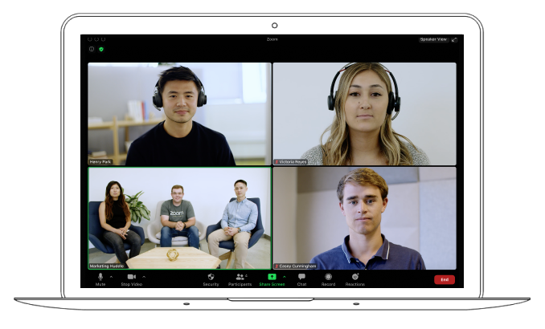
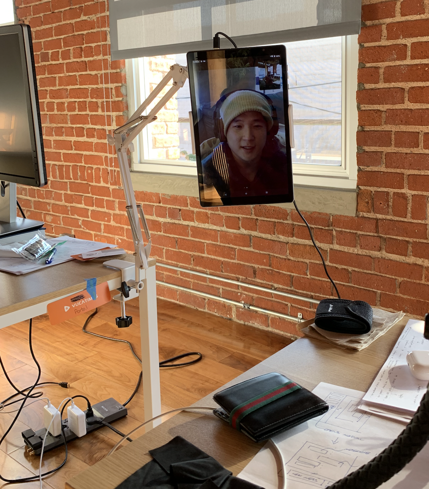

Remote work through a portal

During the strange times that began in 2020, remote work became necessary and normalized. In software development, working remotely is common; and for some, there is no going back. Whether it’s good or not isn’t straightforward to answer. When I worked at a megacorp, the only difference was that I didn’t get free food, and I can skip more meetings. At an agile startup team, the demand for quantity and quality of interaction far outweighs its benefits. So is remote work the inevitable default?
I asked around for some perspectives. One mentor mentioned that during the dot-com boom, there was a lot of hype for remote work. Rumors were going around that the office will no longer be needed for software people. But looking at what happened to the bay area since tells a more complete story.
What does an agilist think? I got a comment from James Coplien:
I did a lot of remote work while in my last five years at Bell Labs. Much of it was conference travel, giving keynotes all over. But I also worked a lot from home. I put a lot of effort into a good home work environment — I built a nice, quiet, paneled office with a good workdesk and small library, and had some good computing equipment and, for the time a great network (ISDN). That gave me home Internet connectivity at multi-megabit rates, which was rare for the time. I think I was the first ISDN customer in Wheaton, Illinois.
At that time I was in Research, which really wasn’t a team thing at the time — kind of. I was probably more effective from home than at the office.
In general — and especially for software development — I don’t think that’s true. You need to be sitting with fellow developers as you code. And it’s good if they’re sitting within a stone’s throw of real end users, or, in a larger enterprise, with the business-facing folks. And I’m an ENFP (I think you and I share that extroverted component of our personality); most programmers are INTJs, and might actually prefer solo work to having to communicate face-to-face. I think that preference feeds all the hype you here about remote-work-is-here-to-stay. The F2F communication is nonetheless more effective — lots of studies show this. And I personally happen to enjoy a good dose of it (though I also thrive doing solo coding, and would prefer 20% pair programming and 80% solo programming).
All in all I think it will be good for companies to get people back under one roof. Collocation is a powerful force for identity, and teams are all about identity.
Colocated team is a pattern from A Scrum Book:
Complex collaborative development such as knowledge work requires high-quality communication to be effective. It is difficult to predict the timing, frequency, and duration of this communication necessary for success.
Therefore:
Collocate the team members, ideally in a room of their own, within talking distance. Alistair Cockburn suggests that the entire team sit within the length of one school bus (
Well, obviously during a pandemic where people can’t be at the office, Colocated team is impossible! Patterns are wrong and useless! …
 |
|---|
| A typical zoom meeting |
A natural response to losing the ability to physically be together is to just teleconference. A zoom meeting is kind of like being together, where each participant can give their thoughts and receive feedback. But there’s some things that make it quite not like a real get-together:
- Should I schedule meetings? How long does it take to schedule that meeting? Is this a meeting that could have been an email?
- Is this person paying attention to what I’m saying? I see that their eyes are pointing forward, but if I could be watching Youtube during the last presentation, this person could be too, for all I know!
- If it’s a meeting, should I prepare an agenda and take some notes? I don’t wanna waste anybody’s time.
- I have a quick question, but I expect a back-and-forth. If I message them, should I expect a response right away?
- Did they hear what I just said? Should I expect them to acknowledge my point by repeating it?
Is there was a way to keep communications open, such that the scheduling and connectivity dance be avoided?
A wise man (Lachlan heasman) once told me that the best way to do remote work is to simulate the collocation. Like a portal through space, as much signal from the remote desk should be tunneled through to the on-site desk. This is especially important if there are some people working onsite and some remote. The remote worker gets left out of casual work conversation.
 |
|---|
| This is how my side of the portal looks like. |
A portal simulates the on-site experience. If I’m not on screen, I’m afk. if I’m looking at the screen, I’m definitely paying attention to you. If I’m looking away, I’m likely busy doing some work. If I need to be interrupted, just talk at me, like a normal human being. There’s no need to read and re-read an ambiguous text message.
 |
|---|
| This is what I look like from the other side. |
My facial expression and the gaze are incredibly relevant signals. If I have a frow on, then you’d be able to pick up on it as opposed to a smaller screen or alt-tabbed behind your chrome tab.
 |
|---|
| I’m getting work done, but ready to respond at any minute. |
I also have a 2x zoom lens clipped to the front-facing camera, so that my face is shown in greater detail. Emotional channels are often ignored in discussing video meetings.
I can imagine the horror of some people citing that I am voluntarily giving up the privacy and comfort of working from home, or if my boss is so paranoid about my productivity that he has to overlord my desk presence. To address those concerns, this portal is bi-directional, meaning that it’s an equal exchange in information. If someone’s watching me work, I’m watching them, too. This is not a security camera. Also, this allows me to establish a voice at the office, where informal communication can be exchanged. If I voice a concern with my teammate, then others can pick up on it and respond. If if was a regular zoom meeting, it would be done through headphones and in private. If I have a concern at work, I’d want everyone to know about it so that it gets fixed!
It’s been about two weeks since I started using the portal. Each tablet cost about $150, and the mounts cost $30 a piece. At a combined total of around $400 2021 dollars, it’s an inexpensive alternative to traveling to a different city and being onsite. 90% of the benefits for 1/10th the price. That’s a huge bargain.